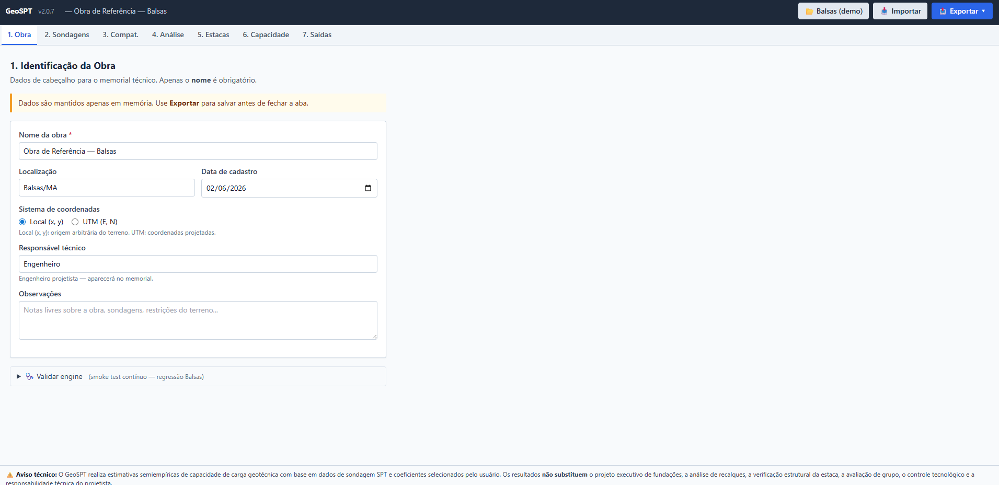
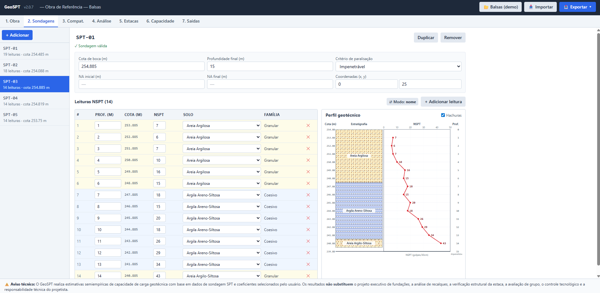
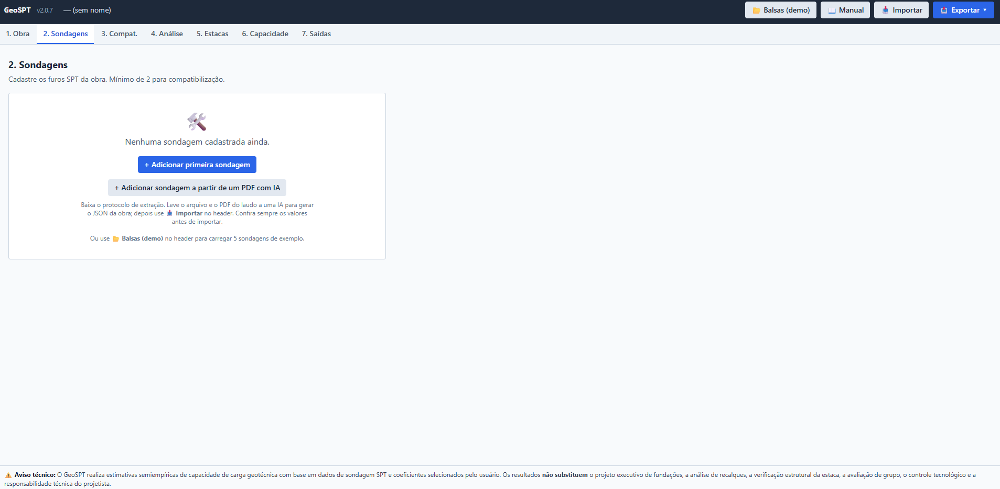
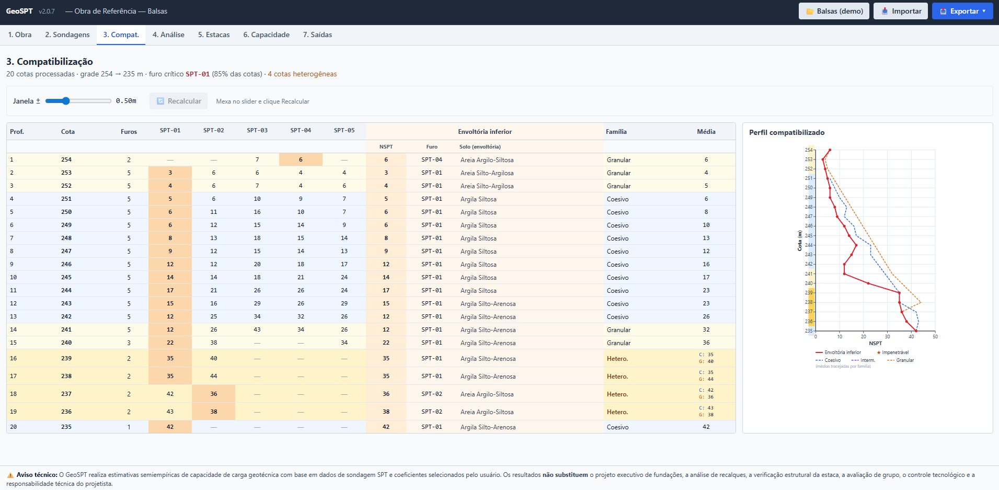
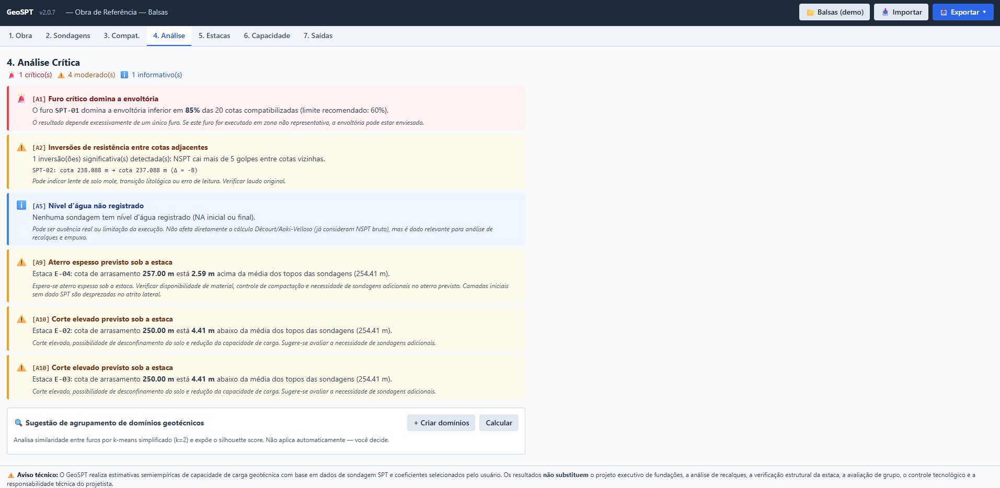
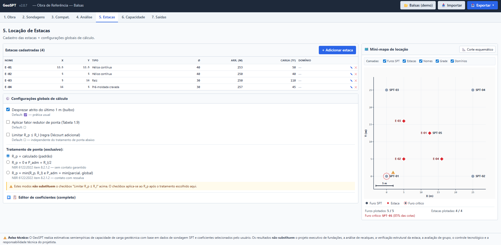
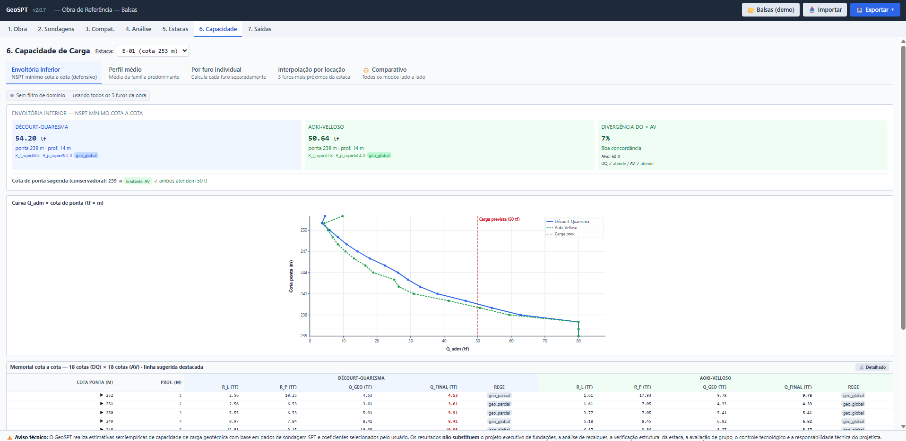
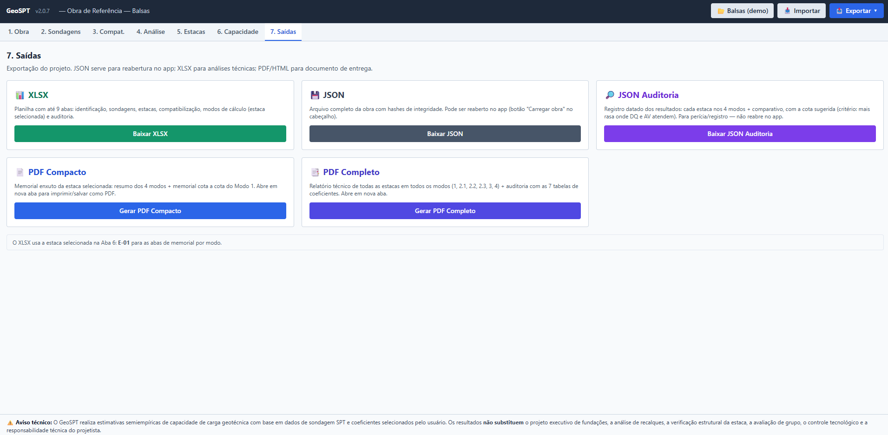
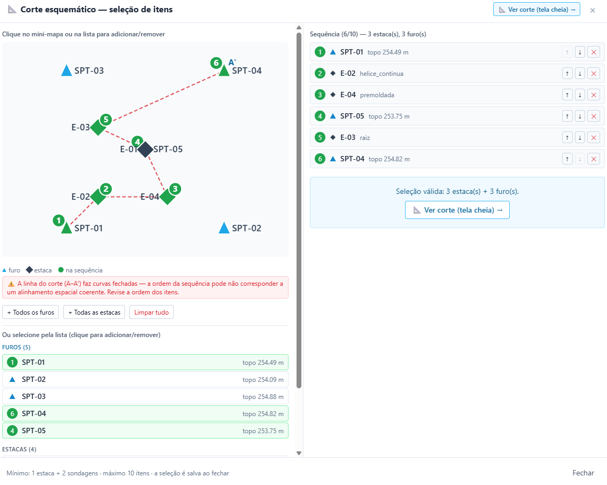
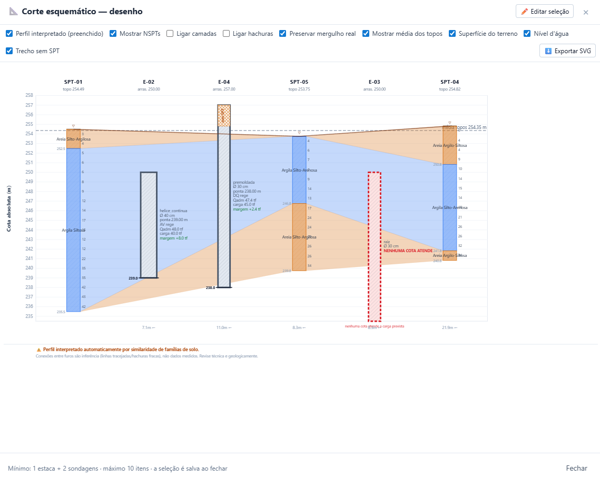

Manual de Utilização — GeoSPT
Análise de sondagens SPT e cálculo de capacidade de carga de estacas (Décourt-Quaresma e Aoki-Velloso)
O GeoSPT é uma aplicação web que roda inteiramente no navegador, organizando o fluxo de um projeto geotécnico em sete abas sequenciais — da identificação da obra até a exportação dos memoriais. Ele compatibiliza múltiplos furos de sondagem por cota absoluta, estima a capacidade de carga das estacas em quatro modos de cálculo e gera um corte esquemático interpretado do subsolo.
Ctrl+K) para localizar qualquer termo deste manual. Enter avança entre as ocorrências; Esc limpa a busca.
1. Visão geral e fluxo de trabalho
A ordem das abas é o fluxo de trabalho sugerido, mas a navegação é livre — você pode pular entre abas a qualquer momento. A barra superior dá acesso ao exemplo de demonstração e às funções de importar/exportar a obra.
| # | Aba | O que faz |
|---|---|---|
| 1 | Obra | Identificação do projeto (nome, local, responsável técnico) que alimenta os memoriais. |
| 2 | Sondagens | Cadastro dos furos SPT (NSPT por metro, cota de topo, nível d'água). |
| 3 | Compat. (Compatibilização) | Alinhamento dos furos por cota absoluta, gerando um perfil consolidado. |
| 4 | Análise | Alertas críticos automáticos (A1–A10) e sugestão de agrupamento em domínios geotécnicos. |
| 5 | Estacas | Cadastro das estacas e configurações globais de cálculo. Daqui se abre o Corte Esquemático. |
| 6 | Capacidade | Cálculo da capacidade de carga em 4 modos + comparativo. |
| 7 | Saídas | Exportação dos resultados em XLSX, PDF e JSON. |
📤 Exportar ▾ no topo) com frequência — esse arquivo é a sua "obra salva". Veja a seção 7.
2. Conceitos básicos
Três termos aparecem em todo o app e convém fixá-los antes de começar:
NSPT
Número de golpes do ensaio SPT por metro de profundidade. É o dado bruto de cada sondagem — quanto maior o NSPT, em regra, mais resistente é o solo naquele trecho. Analogia: pense no NSPT como a "dureza" que o terreno opõe à cravação, medida metro a metro como degraus de uma escada.
Cota absoluta
A altura de cada ponto em relação a um referencial (por exemplo, o nível do mar). Como cada furo tem uma cota de topo diferente, a compatibilização alinha tudo pela cota, não pela profundidade. Analogia: é como comparar prédios pela altitude do andar, e não pelo número do andar — só assim o "3º andar" de um prédio mais alto fica na mesma linha do "5º andar" do vizinho.
Família de solo
Classificação simplificada em três grupos, usada pelo corte esquemático para decidir quais camadas se conectam entre furos vizinhos:
- Coesivo — argilas;
- Granular — areias;
- Intermediário — siltes.
3. Instalação e execução
Pré-requisito: Node.js versão 18 ou superior (recomendado 20+).
# 1. Instalar as dependências (cria a pasta node_modules)
npm install
# 2. Rodar em modo desenvolvimento — abre em http://localhost:5173
npm run dev
# 3. Gerar a versão de produção (saída na pasta dist/)
npm run build
# 4. Pré-visualizar a versão de produção localmente
npm run previewgeospt-vite em vez de geospt vite). Espaços já são tratados no vite.config.js, mas continuam sendo boa prática para evitar erros de resolução de módulos no Windows.
📖 Manual na barra superior, ele abre este documento em uma aba separada do navegador, para consulta simultânea ao uso. Para que isso funcione, o arquivo do manual e a pasta de imagens devem estar publicados junto do app (em public/).
4. Primeiro uso: do zero ao PDF
Roteiro mínimo para percorrer o app inteiro, da abertura à entrega de um memorial. Para ver tudo funcionando rapidamente, comece carregando o exemplo (passo 1).
- (Opcional) Carregar o exemplo. Clique em
📂 Balsas (demo)no topo para popular o app com 5 sondagens e 4 estacas reais. Útil para conhecer as telas sem digitar nada. - Aba 1 — Obra. Preencha nome da obra, localização e responsável técnico (esses campos aparecem nos memoriais).
- Aba 2 — Sondagens. Cadastre pelo menos 2 furos: nome, cota de topo, profundidade, critério de paralisação, nível d'água e as leituras de NSPT metro a metro.
- Aba 3 — Compatibilização. Ajuste a janela de compatibilização se necessário e clique em
Recalcular. Confira a tabela densa e o perfil consolidado. - Aba 4 — Análise. Leia os alertas A1–A10. Se quiser agrupar furos semelhantes, clique em
Calcularna sugestão de domínios e aplique. - Aba 5 — Estacas. Adicione uma estaca (tipo, diâmetro, cota de arrasamento, carga prevista) e revise as configurações globais de cálculo.
- Aba 6 — Capacidade. Selecione a estaca e o modo de cálculo. Leia a Qadm, a carga prevista e a margem (colorida pelo sinal).
- Aba 7 — Saídas. Exporte o JSON (obra salva), o XLSX (memoriais) e/ou o PDF (documento de entrega).
5. Manual das abas
Cada seção abaixo descreve o que a aba faz, seus principais controles e um passo a passo de uso.
5.1 Aba 1 — Obra
Formulário de cabeçalho do projeto. Os campos preenchidos aqui aparecem nos memoriais exportados (Aba 7). No rodapé da aba há um diagnóstico técnico da engine, discreto e expansível.
Campos:
- Nome da obra — identificação principal (aparece no topo do app);
- Localização — Município/UF;
- Data de cadastro;
- Sistema de coordenadas — referencial usado nas coordenadas de furos e estacas;
- Responsável técnico — nome e CREA;
- Observações — notas livres sobre a obra, sondagens ou restrições do terreno.

5.2 Aba 2 — Sondagens
Cadastro dos furos de sondagem SPT. Há uma barra lateral com a lista de furos e o botão + Adicionar; o painel principal edita o furo selecionado; a remoção pede confirmação.
- Clique em
+ Adicionarna barra lateral para criar uma sondagem. - Selecione uma sondagem na lista para editá-la no painel principal.
- Preencha, para cada furo: nome, cota de topo, profundidade final, critério de paralisação (ex.: impenetrável), nível d'água e as leituras de NSPT metro a metro.
- Para remover, use o botão de exclusão (com confirmação).

5.2.1 Adicionar sondagem a partir de um PDF (com IA)
Na tela inicial da Aba 2 (quando ainda não há nenhuma sondagem cadastrada), além do botão + Adicionar primeira sondagem, existe um segundo botão: + Adicionar sondagem a partir de um PDF com IA. Ele ajuda a transformar um laudo em PDF em sondagens importáveis — de forma assistida, com conferência humana obrigatória.
FORMATO_EXTRACAO_NSPT.md). Ele não lê o PDF automaticamente nem embute IA no app, e nenhum dado é enviado a servidores: a extração é feita por uma IA externa (ex.: Claude), à sua escolha, e o GeoSPT permanece 100% local.
Fluxo de uso:
- Na tela inicial da Aba 2, clique em
+ Adicionar sondagem a partir de um PDF com IA. O app baixa o arquivoFORMATO_EXTRACAO_NSPT.md. - Leve esse
.mdjunto com o PDF do laudo a uma IA e peça: "Extraia as sondagens no formato padrão GeoSPT (FORMATO_EXTRACAO_NSPT)." - A IA devolve dois blocos: (a) um relatório de conferência (tabela por furo, com os valores de baixa confiança marcados) e (b) um JSON no schema do GeoSPT.
- Confira o relatório contra o PDF — sobretudo os dígitos de NSPT, as cotas de topo e os trechos impenetráveis.
- Use o botão
📥 Importar(no topo) para carregar o JSON no app. - Revise a Aba 2 (sondagens) e a Aba 4 — os alertas A2/A8 ajudam a flagrar inversões bruscas de NSPT, que muitas vezes são erro de digitação.
O que vai no JSON (resumo)
O protocolo gera um arquivo no schema geospt-obra, com:
- Uma leitura por metro inteiro de cada furo (profundidade, NSPT, solo e família);
- Regra do impenetrável / NSPT > 50: o arquivo guarda o valor real medido (para auditoria) e usa 50 no cálculo, marcando o trecho como impenetrável — coerente com o que a Aba 2 já faz na digitação manual;
- Solo canônico: cada camada usa um dos 15 nomes de solo padronizados, e a família é derivada da 1ª palavra (Areia → Granular, Silte → Intermediário, Argila → Coesivo).
O detalhe completo — schema raiz, campos de cada furo, tratamento de casos difíceis (PDF escaneado, cota ausente) e a tabela dos 15 solos canônicos — está no próprio FORMATO_EXTRACAO_NSPT.md. Abra-o para conferir antes de importar.

5.3 Aba 3 — Compatibilização
Alinha os furos cadastrados por cota absoluta, produzindo um perfil consolidado do subsolo.
Recursos:
- Janela de compatibilização — um controle deslizante define a tolerância de agrupamento das cotas. A alteração fica em rascunho até você confirmar;
- Seletor de domínio — filtra os furos por domínio geotécnico (ver Aba 4);
- Botão
Recalcular— aplica os ajustes e refaz a compatibilização; - Layout em duas colunas (em telas largas): tabela densa de valores à esquerda e perfil em SVG à direita.
Se houver menos de 2 sondagens, a aba exibe um estado vazio orientando o cadastro.

5.4 Aba 4 — Análise
Análise crítica automática do conjunto de sondagens. A aba mostra três blocos:
- Contagem por severidade — número de alertas críticos, moderados e informativos;
- Lista de alertas (A1–A10) — cada alerta é um card que aponta uma possível inconsistência ou ponto de atenção;
- Sugestão de agrupamento em domínios — uma análise (k-means simplificado) que propõe agrupar furos semelhantes em domínios geotécnicos.
Calcular para gerá-la. Ao aplicar, o domínio sugerido é gravado em cada sondagem, permitindo filtrar cálculos por região do terreno (nas Abas 3 e 6).
Os alertas A1–A10
A análise gera alertas conforme limites técnicos. Observe duas particularidades da numeração: não existe A6 (foi pulado) e, quando não há estaca cadastrada com cota de arrasamento, o alerta A9 vira a variante informativa A9_info.
| ID | Severidade | Título | Dispara quando | Implicação (resumo) |
|---|---|---|---|---|
| A1 | crítico | Furo crítico domina a envoltória | Um furo domina a envoltória inferior em mais de 60% das cotas | O resultado depende demais de um único furo; pode estar enviesado. |
| A2 | moderado | Inversões de resistência entre cotas adjacentes | NSPT cai mais de 5 golpes entre cotas vizinhas | Pode indicar lente mole, transição litológica ou erro de leitura. Verificar o laudo. |
| A3 | moderado | Subamostragem em parte do perfil | Mais de 30% das cotas têm menos de 3 furos representados | Compatibilização pouco robusta; considerar sondagem complementar. |
| A4 | moderado | Heterogeneidade de famílias entre furos | Mais de 20% das cotas têm famílias diferentes entre os furos | Transição lateral de litologia; avaliar perfis paralelos (Modo 2.3) ou domínios distintos. |
| A5 | info | Nível d'água não registrado | Nenhuma sondagem tem NA (inicial ou final) | Não afeta Décourt/Aoki, mas é relevante para recalques e empuxo. |
| A7 | moderado | Sondagens paralisadas por solicitação do contratante | Furo com critério de paralisação = solicitação do contratante | Camadas inferiores não amostradas; capacidade pode ser sub ou superestimada. |
| A8 | moderado | Inversão de grande magnitude | NSPT cai mais de 10 golpes entre cotas | Inversão acentuada; verificar erro de transcrição ou lente encoberta. |
| A9 | moderado | Aterro espesso previsto sob a estaca | Cota de arrasamento > 2,5 m acima da média dos topos das sondagens | Aterro espesso; verificar material, compactação e sondagens no aterro. |
| A9_info | info | Verificação A9/A10 pendente | Não há estaca cadastrada com cota de arrasamento | Cadastrar estaca na Aba 5 para a verificação. |
| A10 | moderado | Corte elevado previsto sob a estaca | Cota de arrasamento > 2,5 m abaixo da média dos topos das sondagens | Corte elevado; possível desconfinamento e redução de capacidade. |

5.5 Aba 5 — Estacas
Cadastro das estacas e das configurações globais de cálculo. Em telas largas, o layout tem duas colunas: à esquerda a tabela de estacas e o painel de configurações; à direita um mini-mapa com a posição de furos e estacas.
Operações com estacas:
- Adicionar — gera o próximo nome livre (E-01, E-02…) e abre o formulário;
- Editar — ícone de lápis (✎) abre o formulário com os dados da estaca;
- Remover — ícone (✕), com confirmação.
Para cada estaca define-se: tipo (hélice contínua, pré-moldada, raiz, etc.), diâmetro, cota de arrasamento, carga prevista e coordenadas.
Configurações globais de cálculo
Painel ⚙ Configurações globais de cálculo:
- Desprezar atrito do último 1 m (bulbo) — prática usual; ligado por padrão;
- Aplicar fator redutor de ponta (Tabela 1.9) — desligado por padrão;
- Limitar R_p ≤ R_l (regra Décourt adicional) — desligado por padrão; é independente do tratamento de ponta abaixo.
Tratamento de ponta (exclusivo — escolha uma opção):
- R_p = calculado (padrão);
- R_p = 0 e P_adm = R_l/2 — NBR 6122:2022, item 8.2.1.2 (sem contato garantido);
- R_p = min(R_p, R_l) e P_adm = min(parcial, global) — NBR 6122:2022, item 8.2.1.2 (contato com ressalva).
O painel inclui ainda o Editor de coeficientes (com presets), para ajustar os coeficientes dos métodos. A partir desta aba abre-se também o Corte Esquemático (botão 📐 Corte esquemático — ver seção 6).

5.6 Aba 6 — Capacidade
Cálculo da capacidade de carga da estaca selecionada, com Décourt-Quaresma e Aoki-Velloso.
- Selecione a estaca ativa.
- Escolha o modo de cálculo (abas internas).
Cada modo apresenta o resumo (Qadm, carga prevista e margem colorida pelo sinal), o detalhamento por camada e o memorial de cálculo. Quando há divergência entre Décourt-Quaresma e Aoki-Velloso, ela é sinalizada.
Os quatro modos de cálculo
| Modo | Descrição |
|---|---|
| Envoltória | Usa a envoltória inferior (a mais conservadora) dos furos. |
| Perfil médio | Usa um perfil médio das sondagens, com submodos (veja abaixo). |
| Por furo | Calcula a capacidade furo a furo, individualmente. |
| Interpolação | Interpola entre furos conforme a posição da estaca, com pesos por cota. |
Há ainda a aba Comparativo, que coloca os modos lado a lado.
Submodos do Perfil médio
- 2.1 — perfil médio simples (médias por cota). Cotas heterogêneas (famílias distintas entre furos) são bloqueadas neste submodo por design: a engine não escolhe família automaticamente;
- 2.2 (conservador) — submodo padrão;
- 2.3 (perfis paralelos) — indicado para tratar cotas heterogêneas que o 2.1 bloqueia.

5.7 Aba 7 — Saídas
Exportação dos resultados. O JSON serve para reabrir a obra no app; o XLSX para análises técnicas; o PDF/HTML para documento de entrega.
| Formato | Conteúdo |
|---|---|
| 📊 XLSX | Planilha com memoriais (uma aba por modo de cálculo + uma comparativa) e colunas de auditoria. Abre no Excel/LibreOffice. |
| Documento formatado em duas versões (compacta e completa), gerado pela função de impressão do navegador. O relatório abre em nova aba — use "Imprimir / Salvar como PDF". | |
| 💾 JSON | Arquivo com todos os dados de entrada e resultados, com hashes de integridade. É o formato de "obra salva" e serve para rastreabilidade. |

6. O Corte Esquemático
Acessível pela Aba 5 (botão 📐 Corte esquemático), o corte é um perfil geológico interpretado entre os furos selecionados.
6.1 Montar a seleção
- Clique em
📐 Corte esquemáticona Aba 5. - No mini-mapa ou na lista, selecione os furos e estacas que comporão o corte, na ordem desejada (cada item recebe um número de ordem). Mínimo: 1 estaca + 2 sondagens; máximo: 10 itens.
- Clique em
Ver corte (tela cheia).

6.2 Camadas (toggles disponíveis)
- Perfil interpretado — preenche as camadas entre furos, conectando blocos da mesma família de solo por trapézios; camadas que terminam lateralmente são representadas por cunhas que se estendem até a face do furo vizinho;
- Mostrar NSPTs — exibe os valores de golpe ao lado de cada furo;
- Ligar camadas / Ligar hachuras — modos alternativos de representar as conexões (linhas tracejadas ou hachuras diagonais);
- Preservar mergulho — desenha as conexões nas cotas reais (camadas inclinadas) em vez de horizontalizadas;
- Superfície do terreno / Nível d'água / Média dos topos — sobreposições de contexto;
- Trecho sem SPT — quando a cota de arrasamento de uma estaca está acima do topo investigado, esse trecho recebe uma hachura âmbar distinta, sinalizando zona não investigada.
As famílias de solo usadas para conectar camadas são: Coesivo (argila), Granular (areia) e Intermediário (silte).

6.3 Exportar e aviso
O corte pode ser exportado em SVG pelo botão Exportar SVG.
7. Salvar e abrir uma obra
- Salvar: use
📤 Exportar ▾no topo e escolha💾 Baixar arquivo(recomendado) ou👁 Visualizar JSON(para copiar com Ctrl+C). O arquivogeospt_<obra>_<data>.jsoncontém todo o estado; - Abrir: use
📥 Importare selecione um JSON exportado anteriormente. O app valida o arquivo (_schema: geospt-obra) e restaura todo o estado.
Mantenha o JSON em local seguro — ele é a sua "obra salva".
8. Perguntas frequentes
O app envia meus dados para algum servidor?
Não. Todo o processamento é feito no seu navegador. Os dados só saem da máquina se você exportar os arquivos.
Por que preciso de pelo menos 2 sondagens?
A compatibilização e o corte comparam furos entre si; com um único furo não há o que compatibilizar.
Aparece "nenhuma cota atende a carga prevista" numa estaca. O que é?
Com os parâmetros atuais, nenhuma profundidade de ponta atinge a carga prevista para aquela estaca. Reveja a carga, o tipo/diâmetro da estaca ou as configurações de cálculo.
O cálculo substitui o projeto de fundações?
Não. É uma estimativa de apoio; o dimensionamento final é responsabilidade do engenheiro habilitado (NBR 6122).
O GeoSPT lê o PDF do laudo automaticamente?
Não. Ele fornece um protocolo padrão (FORMATO_EXTRACAO_NSPT.md, baixado pelo botão na tela inicial da Aba 2) para você extrair as sondagens com uma IA externa e conferir os valores antes de importar. O app não lê o PDF nem envia dados a servidores. Veja a seção 5.2.1.
Por que não existe um alerta "A6"?
A numeração dos alertas pula o A6 por decisão de projeto. Os alertas válidos são A1–A5, A7, A8, A9 (com a variante A9_info) e A10.
Como abro este manual a partir do app?
Se a barra superior exibir o botão 📖 Manual, ele abre este documento em uma aba separada do navegador. Caso não apareça, abra o arquivo HTML diretamente.
9. Glossário
| Termo | Significado |
|---|---|
| NSPT | Número de golpes do ensaio SPT por metro de profundidade. |
| Cota absoluta | Altura de um ponto em relação a um referencial (ex.: nível do mar). Base do alinhamento entre furos. |
| Envoltória inferior | Perfil que toma, em cada cota, o menor valor entre os furos — a hipótese mais conservadora. |
| Família de solo | Classificação simplificada: Coesivo (argila), Granular (areia), Intermediário (silte). |
| Cota de arrasamento | Cota em que a estaca é arrasada (topo aproveitável da estaca). |
| R_p / R_l | Resistência de ponta (R_p) e resistência por atrito lateral (R_l) da estaca. |
| Qadm / P_adm | Carga admissível da estaca. |
| Domínio geotécnico | Agrupamento de furos semelhantes, usado para filtrar cálculos por região do terreno. |
| Décourt-Quaresma / Aoki-Velloso | Métodos semiempíricos de estimativa de capacidade de carga a partir do SPT. |